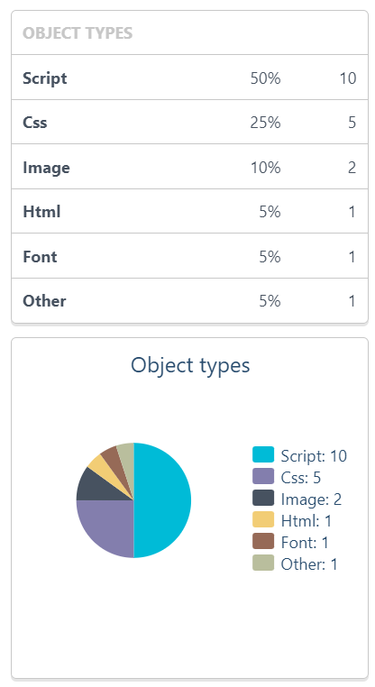

<section fxLayout="row" fxLayoutAlign="center center">
  <div fxFlex class="div-wrapper" fxLayout="column" fxLayoutAlign="space-around center">
    <h3>Performance Metrics</h3>
    <small>for <a href="http://www.chrisyou.com">www.chrisyou.com</a></small>
    <mat-radio-group fxFlex="20"s fxLayout="row" fxLayoutAlign="space-evenly center">
      <mat-radio-button fxFlex class="metrics-radio-btn" matTooltip="General Information" fxLayout="row" value="1" checked="true"
        name="General Information" (click)="navigateTab(0)"></mat-radio-button>
      <mat-radio-button fxFlex class="metrics-radio-btn" matTooltip="Object Types" value="2" name="Object Types"
        (click)="navigateTab(1)"></mat-radio-button>
      <mat-radio-button fxFlex class="metrics-radio-btn" matTooltip="Object Bytes" value="3" name="Object Bytes"
        (click)="navigateTab(2)"></mat-radio-button>
      <mat-radio-button fxFlex class="metrics-radio-btn" matTooltip="Used Domains" value="4" name="Used Domains"
        (click)="navigateTab(3)"></mat-radio-button>
      <mat-radio-button fxFlex class="metrics-radio-btn" matTooltip="Performance Improvements" value="5"
        name="Performance Improvements" (click)="navigateTab(4)"></mat-radio-button>
    </mat-radio-group>
    <mat-tab-group fxFlex="80" class="metrics-tab-group" animationDuration="2000ms" #metricsTab>
      <mat-tab label="First">
        <div fxLayout="column" fxLayoutAlign="start center" class="data-wrapper">
          <h1>General Information</h1>
          
        </div>
      </mat-tab>
      <mat-tab label="Second">
        <div fxLayout="column" fxLayoutAlign="start center" class="data-wrapper">
          <h1>Object Types</h1>
          
        </div>
      </mat-tab>
      <mat-tab label="Third">
        <div fxLayout="column" fxLayoutAlign="start center" class="data-wrapper">
          <h1>Object Bytes</h1>
          
        </div>
      </mat-tab>
      <mat-tab label="Fourth">
        <div fxLayout="column" fxLayoutAlign="start center" class="data-wrapper">
          <h1>Used Domains</h1>
          
        </div>
      </mat-tab>
      <mat-tab label="Fifth">
        <div fxLayout="column" fxLayoutAlign="start center" class="data-wrapper">
          <h1>Performance Improvements</h1>
          
        </div>
      </mat-tab>
    </mat-tab-group>
  </div>
</section>
